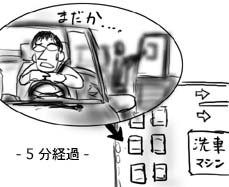

今日は生まれて初めて洗車をしました．
アパートには洗車できるようなスペースはないので，おのずと洗車屋に行かねばなりません．しかしまず何が難しいかというと，洗車屋選びが難しい．どこで洗ったらいいか検討がつきません．近場をぐるぐる回って，人がたくさん洗車している新しそうな洗車屋を探しまわります． この辺，ガソリンスタンドの時から全く進歩していません．
洗車屋に入ったはいいが，手順が全くわかりません．とりあえず洗車したいことを伝え，チェックをもらったはいいものの，これ，鍵を車に残したまま立ち去ってよいのでしょうか(よかったです)．そして，いつ料金を支払ったらよいかもわからないので，前の人についてキョロキョロしながらキャッシャーに侵入．あきらかにレジの人に不振そうな目で見られました．挨拶とかされなかったし！
お金を支払った後，椅子に座って待っていると，洗車マシーンを通って出てきたマイカーを係の人が丁寧に拭いてくれます．それが終わると，係の人がぞうきんを頭上に掲げてクルクル回すので，車まで行ってチップを支払って終了．この辺，待っている間に他の人がやっている様子を目を皿のようにして観察して知りました．いつもギリギリです．
チップを渡して車に乗り込んだはいいものの，前も後ろも右も左も洗車マシーンから吐き出されてきた車でいっぱいで，結局5分ほど閉じ込められました．
洗車も合格にしたいと思います(無理矢理)．